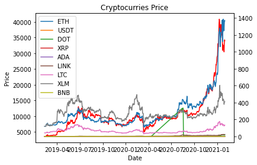
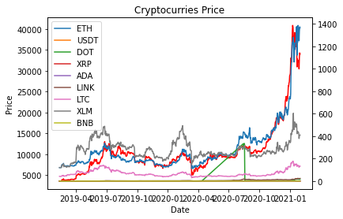
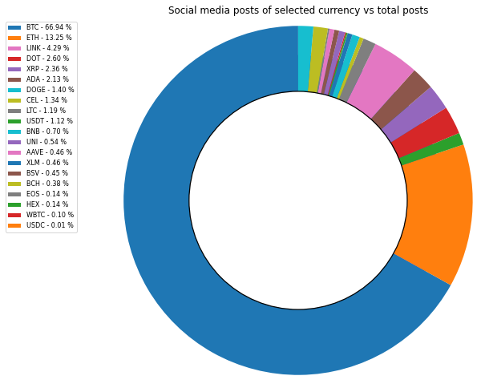
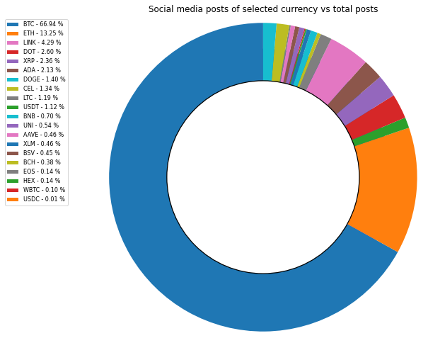

Cryptocurrency Pricing
General overview of data
A cryptocurrency (or crypto currency or crypto for short) is a digital asset designed to work as a medium of exchange wherein individual coin ownership records are stored in a ledger existing in a form of computerized database using strong cryptography to secure transaction records, to control the creation of additional coins, and to verify the transfer of coin ownership. It typically does not exist in physical form (like paper money) and is typically not issued by a central authority. Cryptocurrencies typically use decentralized control as opposed to centralized digital currency and central banking systems.[3] When a cryptocurrency is minted or created prior to issuance or issued by a single issuer, it is generally considered centralized. When implemented with decentralized control, each cryptocurrency works through distributed ledger technology, typically a blockchain, that serves as a public financial transaction database. The data is sourced from LunarCRUSH, a platform that aims to bring transparency to cryptocurrency investing by providing clarity around community activity. This platform employs social data and machine learning to rank coins and price traders broader visibility and context.
There are approximately 5,392 cryptocurrencies being traded with a total market capitalisation of $201bn. The top 20 cryptocurrencies by market capitalisation:Beginning with the largest, the top 20 are currently Bitcoin ($BTC), Ethereum ($ETH), Tether ($USDT), Polkadot, XRP ($XRP), Cardano, Chainlink, Litecoin, Bitcoin Cash ($BCH), Binance Coin, Stellar, USD Coin, HEX, Wrapped Bitcoin, Uniswap, Bitcoin SV, ,Aave, EOS, Celsius, Dogecoin.


|
|
 |
Status of currencies - Data explanation & Top 20 ranked currencies
How Social Media Is Helping Cryptocurrency Flourish. We used the data from LunarCRUSH with the amount of url_shares, reddit_posts, tweets, news, youtube on Jan 30, 2020 for each currency. The currency with largest discussion feeds is Bitcoin composed of 66.9%. The second largest is ETH with 13.3%..

|  |
Cryptourrency Analysis
Select cryptocurrency:
Overview of filtered currency
Ethereum is a decentralized, open-source blockchain featuring smart contract functionality. Ether is the native cryptocurrency of the platform. It is the second-largest cryptocurrency by market capitalization, after Bitcoin. Ethereum is the most actively used blockchain.
Trends of price & social media posts through history
|
Social Media distribution of selected currency - radar plot
|
Model 1 Results - ARIMA
A famous and widely used forecasting method for time-series prediction is the AutoRegressive Integrated Moving Average (ARIMA) model. ARIMA models are capable of capturing a suite of different standard temporal structures in time-series data.

Model 2 Results - LSTMs
Time-series forecasting models are the models that are capable of predicting future values based on previously observed values. Long short-term memory (LSTM) is an artificial recurrent neural network (RNN) architecture used in the field of deep learning having feedback connections. Not only can process single data points such as images, but also entire sequences of data such as speech or video.

Model 3 Results - Random Forest
Multiple decision trees working in individual samples of the data gives the opportunity to predict coin price considering the relationship they have with social media engagement. It was selected because it’s robust against overfitting, outliers, and non linear data.